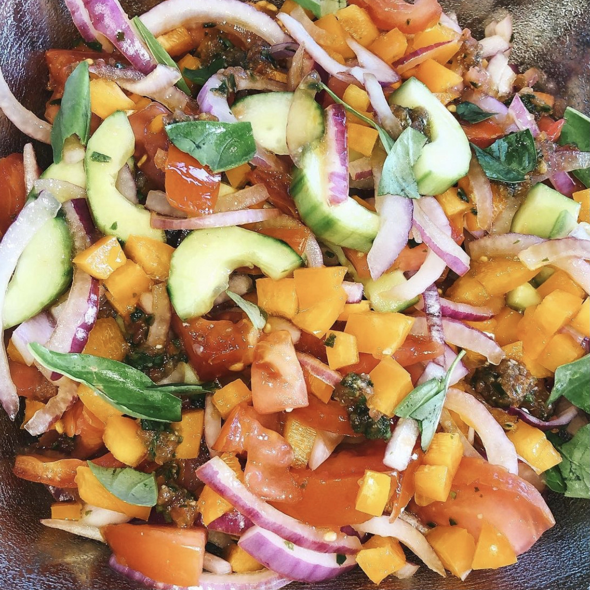

Find my 6 favorite recent recipes (updated weekly)!

The first night of my junior year, my roommates and I made a traditional Israeli dish named Shakshuka, a tomato based stew topped with poached eggs. This time, however, we made it with a twist and added mushrooms and substituted the tomato base with spinach and it sure was yummy!

During quarantine, my sister and I cooked every single day. We loved making extravagant meals and always added something fun to the mix. On this day we made a Pull-Apart Garlic Butter Bread Wreath. Not only was it delicious, but it was fun to try something new with my sister.

My sophomore year, I participated in a zoom cooking class where we made shakshuka “together”. Not only was it fun, but the dish was amazing! I would definitely recommend making this shakshuka. While it is just an ordinary shakshuka with feta, you will be amazed at how good it tastes.

This very simple recipe is an easy go-to for a yummy breakfast. I would say it is a few notches up from a typical avocado toast. Adding this poached egg makes all the difference. Following this Poached Egg and Avocado Toast recipe from Pinch of Yum will change your life (or how you make avocado toast) forever!
I know you have probably heard of gazpacho soup, but have you ever heard of a gazpacho salad? This is by far one of the best salads I have ever made. The flavor was intense and the texture was perfect. Better yet, it was so easy and simple to make.

As Half Baked Harvest likes to say, this colorful salad is like summer on a plate. This wonderful blend of ingredients is nothing like your typical salad. Honestly, it's like all of my favorite ingredients put together in one salad. This salad never disappoints, whether it just be for you or even for a large gathering.